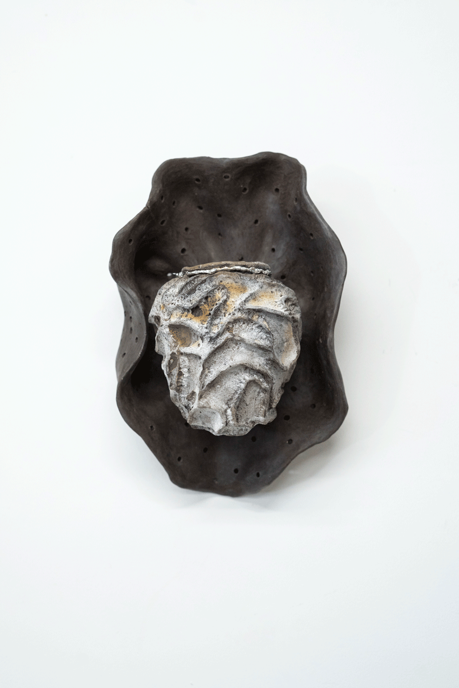
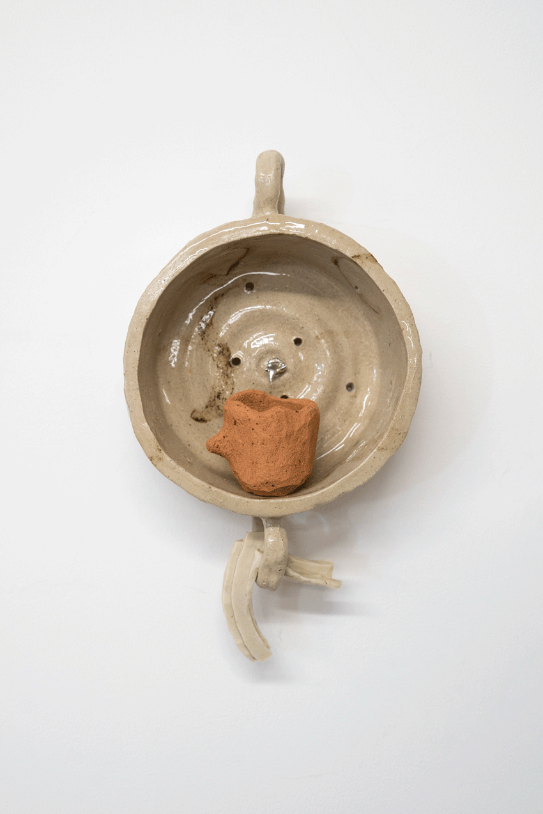
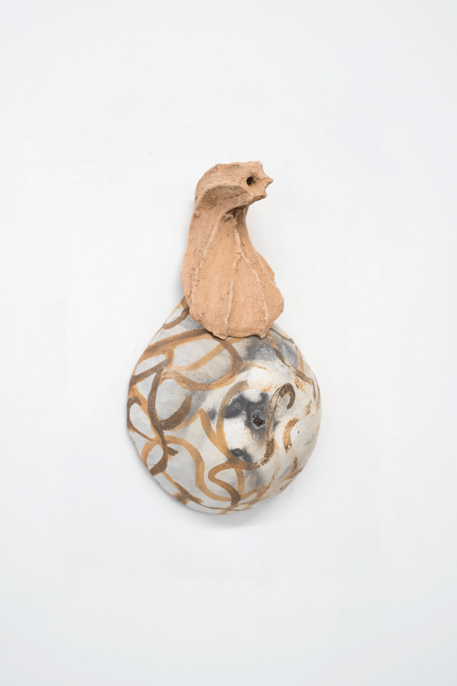

2023, Royal Scottish Academy, Edinburgh
cow milk, goat milk, solder, Lumsden clay, Bragar slip, reclaimed stoneware, Barvas clay, Barvas slip, Sandend slip, Lumsden slip, chalk
An assortment of milky vessels and my version of the dream makers, a story first collected and documented by Otta Swire (1898 – 1973), in Skye, which describes an encounter with otherworldly entities who sculpt dreams from cheese.
  